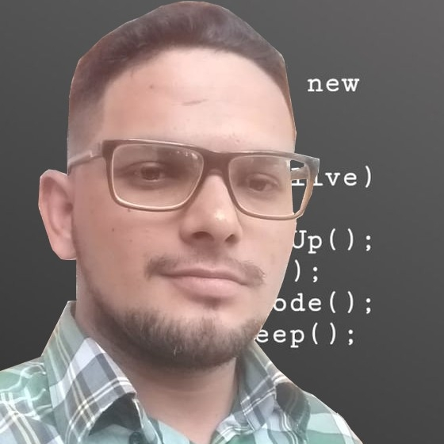

Estudante de Engenharia de Software | Futuro Dev Fullstack
Sou um brasileiro apaixonado por tecnologia, atualmente estudando Engenharia de Software e me dedicando ao desenvolvimento de software. Busco constantemente aprender novas habilidades e aplicar meus conhecimentos em projetos práticos que me desafiem e me façam evoluir.
Tenho interesse em construir uma carreira sólida na área de TI, explorando tanto o front-end quanto o back-end, sempre com foco em soluções eficientes e criativas. Este portfólio é uma forma de mostrar minha evolução e compartilhar meus projetos com quem se interessa pelo meu trabalho.
Uma página com curiosidades sobre um dos jogos mais odiados pelos fãs da franquia Resident Evil da mega produtora de games CAPCOM.
Email: adiulesonarlen@gmail.com
GitHub: AdiulesonArlen